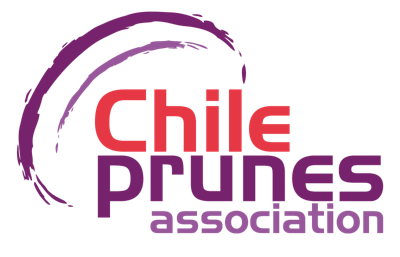

Chileprunes · Programa Chile Origen Consciente
Cadena de custodia de la ciruela deshidratada
Herramientas del programa ChOC. No necesitas instalar nada.
Pizarrón participativo
Tablero con el flujo de proceso, que varias personas editan a la vez.
Abrir pizarrónFormulario de validación
Identificación, puntos críticos y de mezcla, y especificaciones. Guarda automáticamente.
Abrir formularioRespuestas del formulario
Planilla con lo que respondió cada empresa y sus archivos adjuntos. Solo la abre quien tiene acceso.
Abrir planillaUmbral y progresión del balance de masa
Tres preguntas, unos 3 minutos, para definir qué porcentaje de fruta certificada exigir y en cuántos años. Guarda automáticamente.
Abrir formulario